Silencio a partir de las 22:00
Las paredes dejan pasar el sonido y la escalera amplifica las conversaciones. Música y voces altas, mejor fuera de casa por la noche.
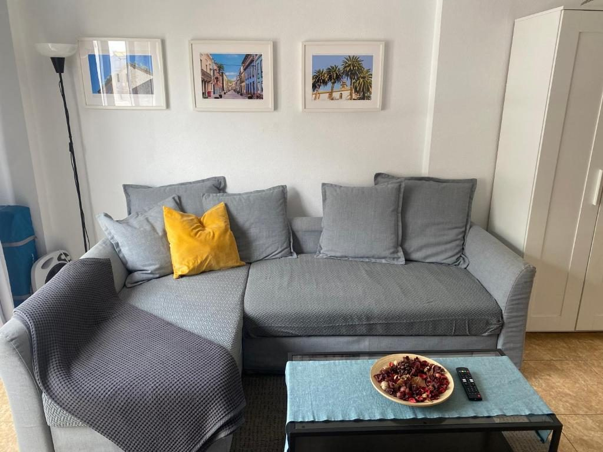
Apartamento vacacional en Tenerife
Sesenta metros cuadrados en una ciudad declarada Patrimonio de la Humanidad. Nuestro piso familiar, a seis minutos a pie de la catedral, con parking privado incluido y el aeropuerto del norte a dos kilómetros.
Es la casa de nuestra familia en La Laguna, reformada y equipada para recibir huéspedes. Sesenta metros cuadrados para ti solo: un dormitorio con cama de matrimonio, un salón con sofá cama y televisión, cocina completa y baño propio. Caben cuatro personas sin ir apretados.
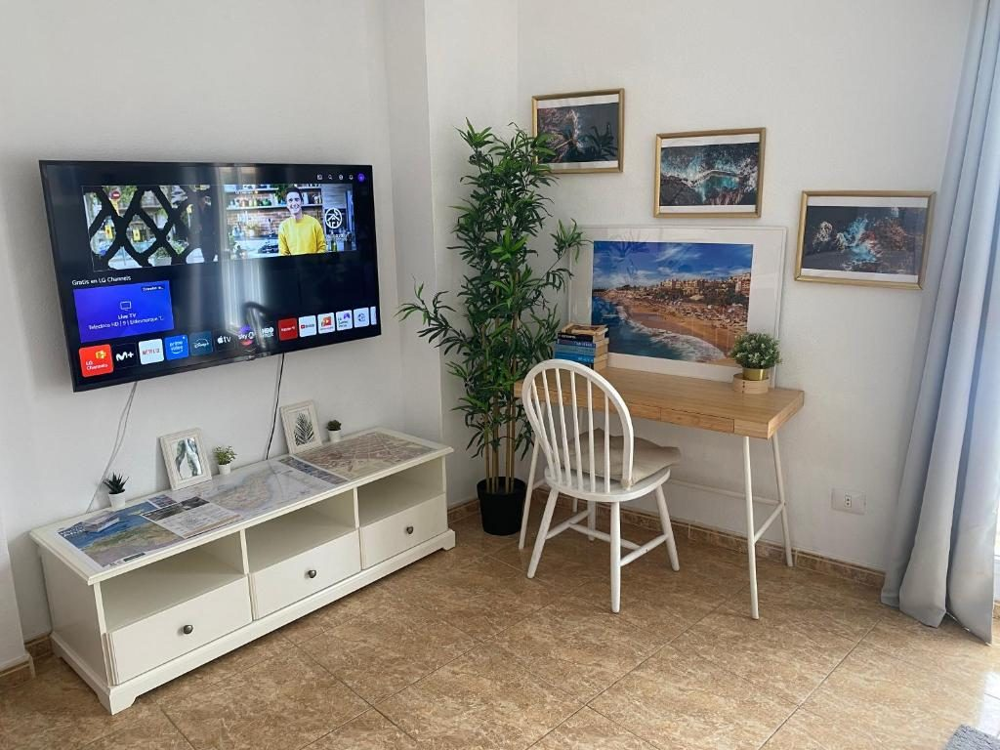
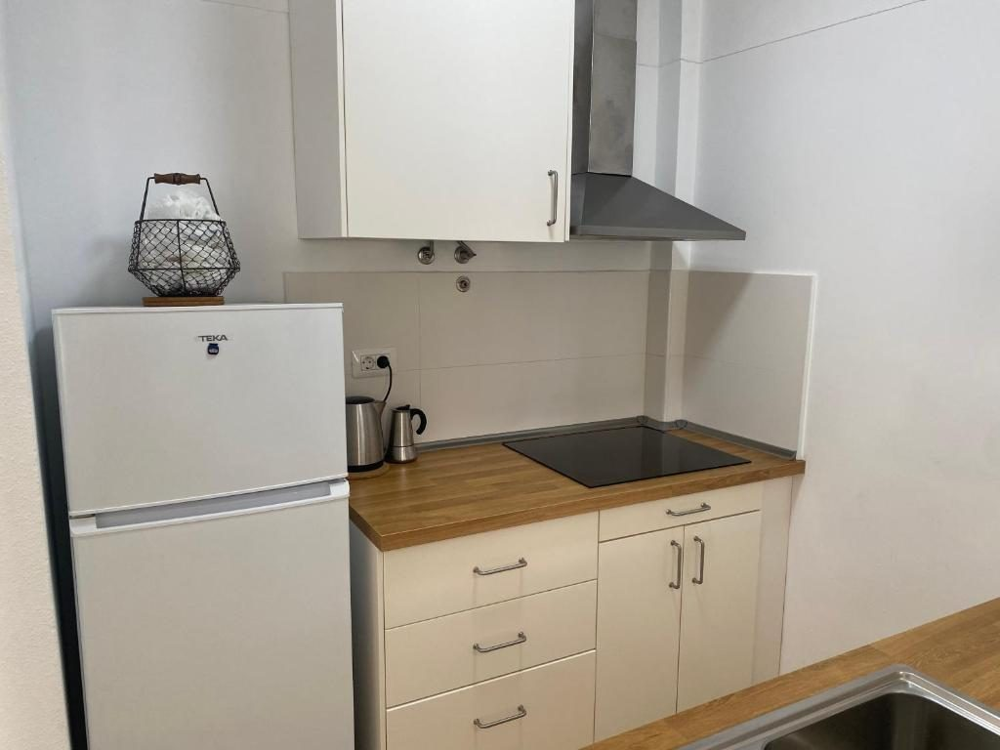
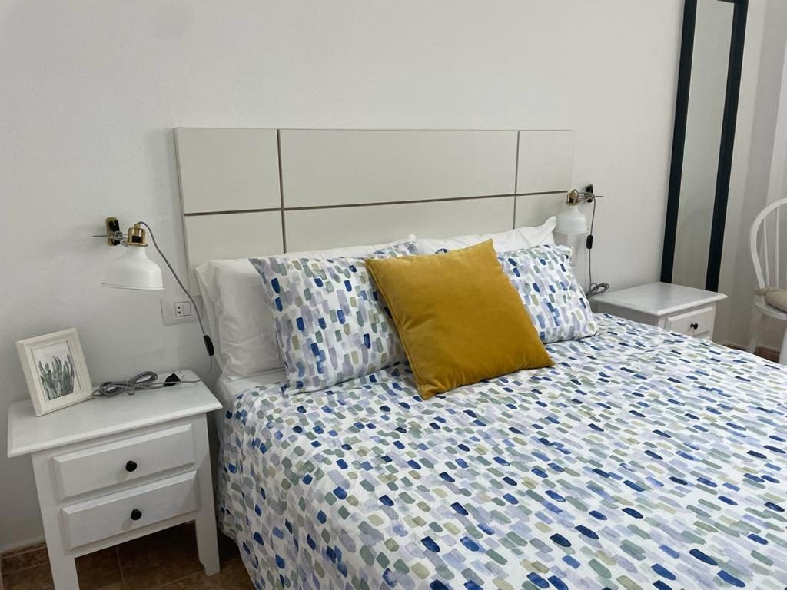
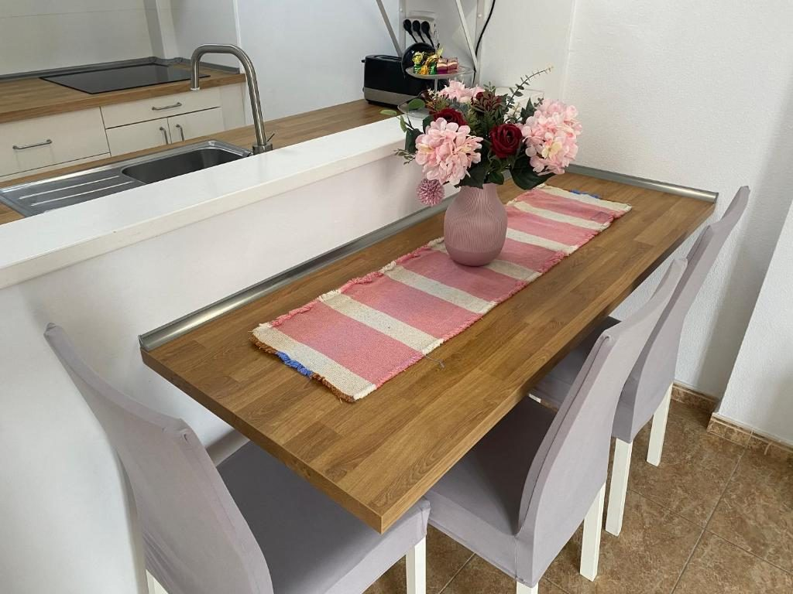
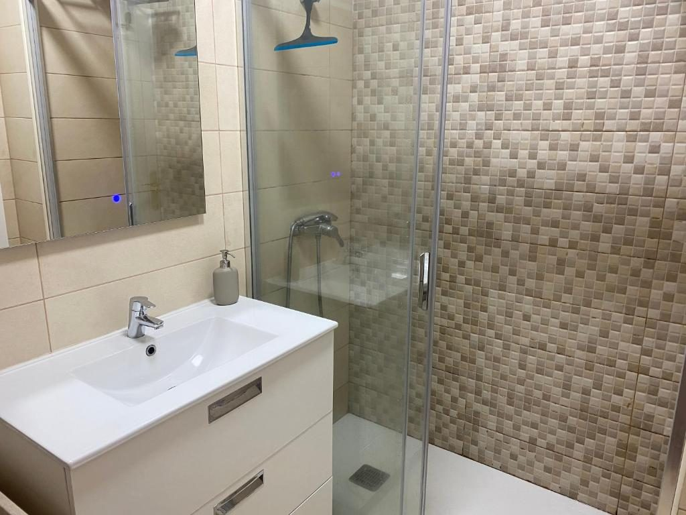
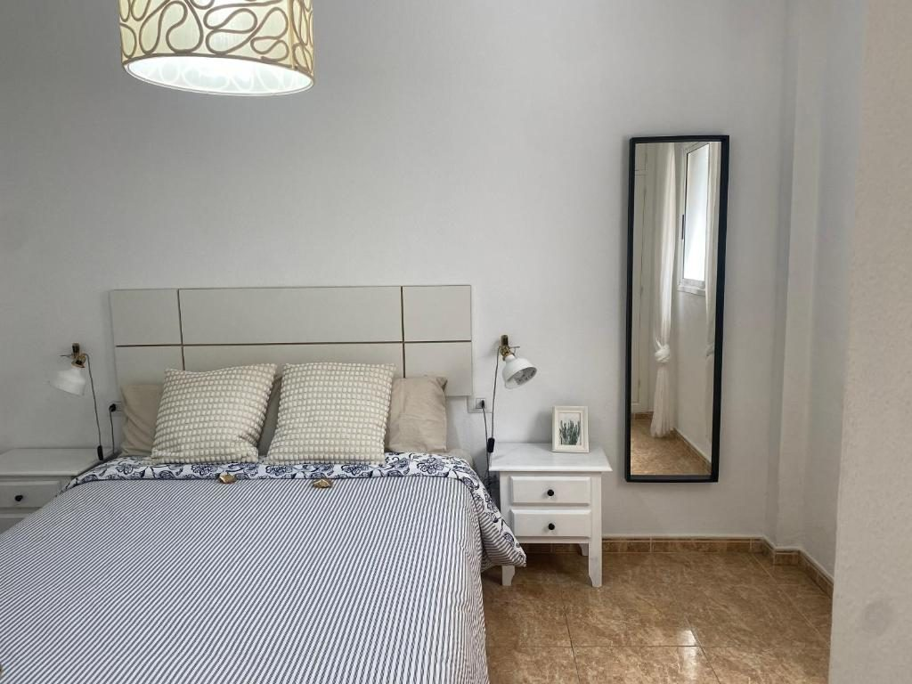
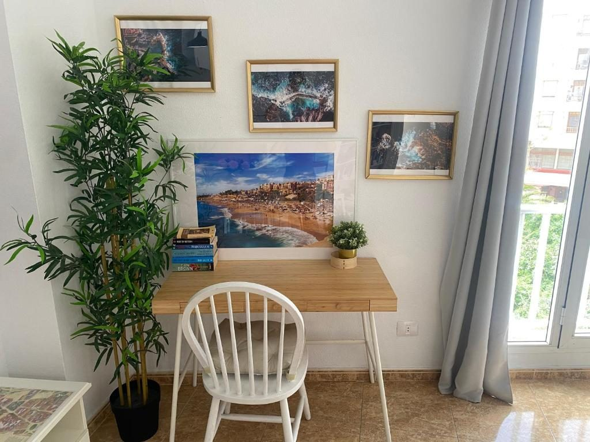
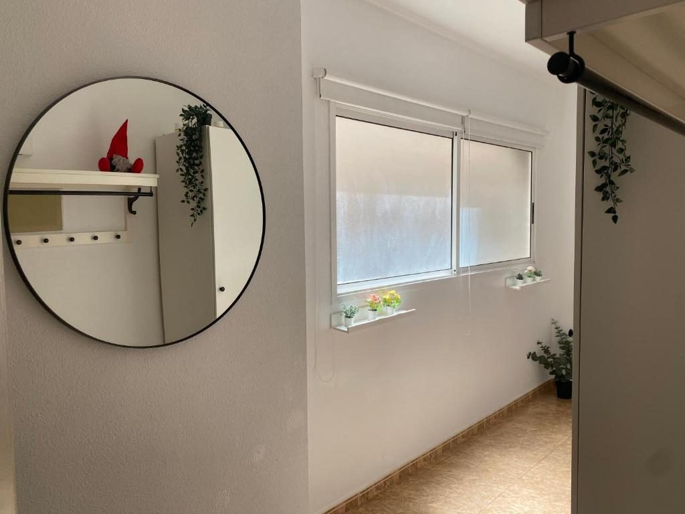
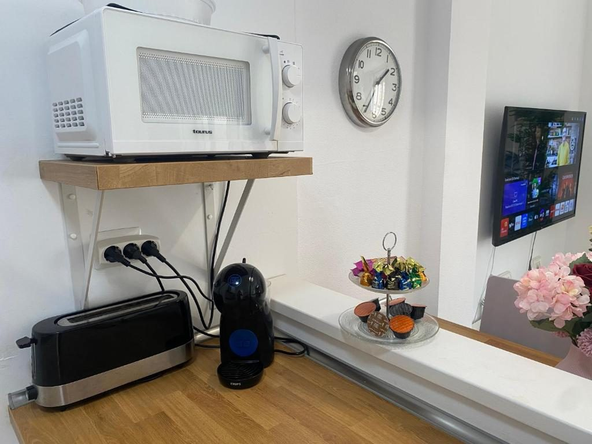
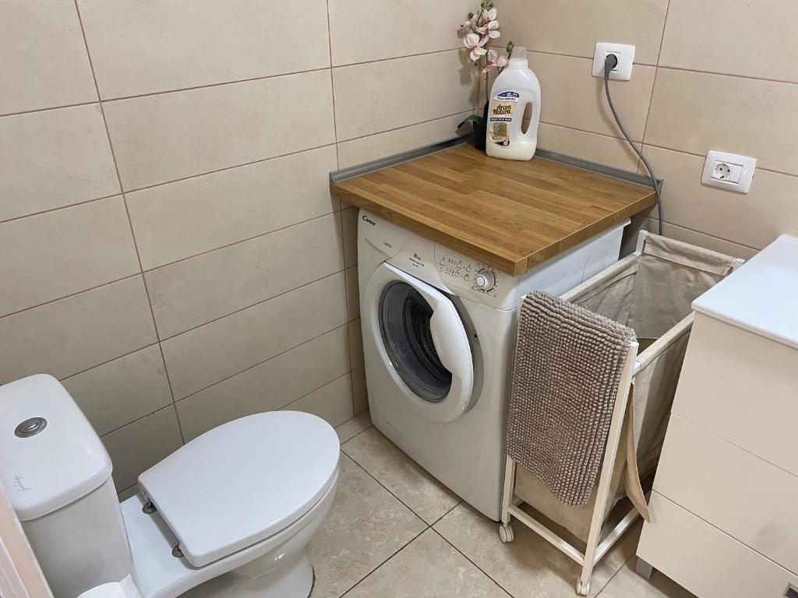
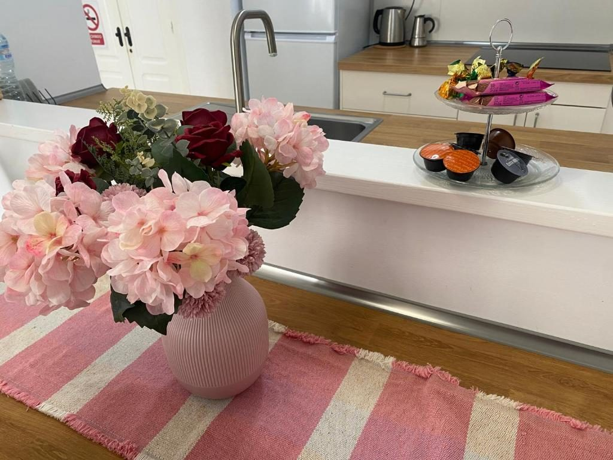
Fue la primera capital de Tenerife y conserva el trazado del siglo XVI: calles rectas, casas de colores con balcones de madera y una vida de ciudad universitaria. Hace fresco por la noche incluso en verano, lo cual se agradece después de un día de playa.
Distancias calculadas con OpenStreetMap.
Preferimos contarlo antes que después. Es un edificio tranquilo de vecinos de toda la vida, y queremos que siga siéndolo.
Las paredes dejan pasar el sonido y la escalera amplifica las conversaciones. Música y voces altas, mejor fuera de casa por la noche.
La rampa de bajada es justa para coches grandes. Con un compacto no hay problema. Te explicamos el acceso y te dejamos el mando dentro del apartamento.
Avísanos de tu hora de llegada y te mandamos los códigos del portal y de la caja de llaves. La salida es hasta las 11:00 y las llaves vuelven a la caja.
Máximo cuatro personas alojadas. Tampoco despedidas de soltero. Es un piso para descansar, no para celebrar.
Escríbenos con las fechas y el número de personas y te confirmamos disponibilidad y precio en el día. Hablamos español, inglés, francés y alemán.
También puedes reservar en Booking, donde tenemos 9,1 sobre 10 con más de cien comentarios.